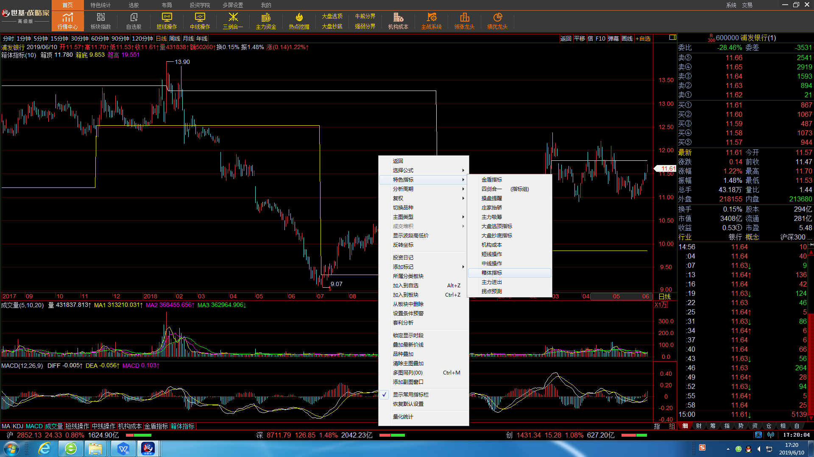

4.4箱体指标
所谓箱体指标，是指股票在运行的过程中，形成个定的价格区域，即价格在一定范围内波动，这样就形成一个股价运行的箱体，当股价滑落到箱体底部时，会受到买盘的支撑，
当股价上升到箱体顶部时，会受到卖盘的压力，一旦股价有效突破原箱体的顶部或底部，股价就会进入一个新的箱体内运行，原箱体的顶部或底部将成为重要的支撑位的压力位。
因此，只要股价上扬并冲到了心里所想象的另外一个箱子，就应买进；反之应卖出。箱 体理论的优势在于不仅仅是以一天或几天的K线数据为研究对象，而是以整个的所有 K线数据作为研究对象，因而决策的信息量更大。箱体理论的精髓在于，股价收盘有效 突破箱顶，就意味着原先的强阻力变成了强支撑，而股价必然向上进入上升周期。只要 技术指标盘中不即时显示箱顶标志，持仓待涨应该是个不错的选择，尤其当股价升势明 显时。同理，当上升中的股价出现箱顶标志后开始出现下跌，以后很可能会下跌或整理 一段较长的时间，将时间或精力耗在其中是件不明智的事情，但往往对此前景投资者是 无法预测到的。突破(跌破)强阻力(支撑)必然上涨(下跌)寻强阻力(支撑),突破上箱底进入 上箱寻顶,跌破下箱顶进入下箱寻底。
